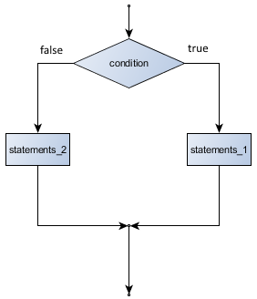
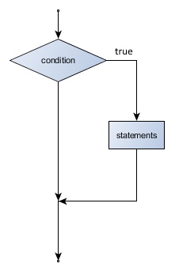
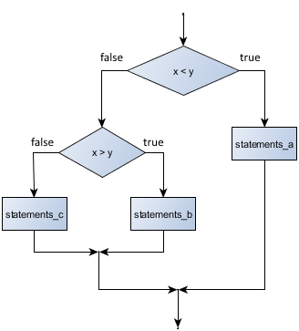

9. Working with Booleans and Conditional Statements¶
Programs get really interesting when we can test conditions and change the program behaviour depending on the outcome of the tests. That’s what this chapter is about.
9.1. Boolean values and expressions¶
A Boolean value is either true or false. It is named after the British mathematician, George Boole, who first formulated Boolean algebra — some rules for reasoning about and combining these values. This is the basis of all modern computer logic.
In C#, the two Boolean values are false and true (remember that this
language is case sensitive, so they must be exactly as shown), and the C# type is bool.
We can define and initialize variables of type bool:
A Boolean expression is an expression that evaluates to produce a result which is
a Boolean value. For example, the operator == tests if two values are equal.
It produces (or yields) a Boolean value. So another much more compact
way to write lines 4 - 11 in the above code would be like this:
Remember the rule for assignment: evaluate the right side of the assignment first. Then assign the resulting value to the variable on the left. Convince yourself that the short version is equivalent to the longer version, and ensure that you understand the generalization here: variables, expressions and assignment are not just restricted to simple number types: some expressions can produce Boolean results, some can produce string results, some integer results, etc. So assignment is very general, and will work as long as we don’t violate the C# rules about types.
9.2. Comparison operators¶
The == operator is one of six common comparison operators which all produce
a bool result; here are C# expressions showing all six:
// Evaluates to true if _________________ x == y // x is equal to y x != y // x is not equal to y x > y // x is greater than y x < y // x is less than y x >= y // x is greater than or equal to y x <= y // x is less than or equal to y
Although these operations are probably familiar, the C# symbols are
different from the mathematical symbols. A common error is to use a single
equal sign (=) instead of a double equal sign (==). Remember that =
is an assignment operator and == is a comparison operator. Also, there is
no such thing as =< or =>.
These comparison operators will work for most simple types like int, double and char.
The operators that test for equality (== and !=) also work for strings, but we
unfortunately cannot use the ordering operators (< , <=, >, or >=) for comparing
strings. (There is another way to compare strings which we’ll get to in the chapter about strings.)
Like any other types we’ve seen so far, Boolean values can be assigned to
variables (of type bool), or used in a String.Format method in much the same
way as we previously used int or double values.
int age = 23; ... bool old_enough_to_get_driving_licence = age >= 18; string s = string.Format("It says {0}.", old_enough_to_get_driving_licence);
9.3. Logical operators¶
There are three logical operators associated with Booleans: and, or, and not.
C# uses the syntax &&, ||, and ! for these. So when we see these C# tokens
we’ll pronounce && as and, we’ll say or when we read the token ||, and we’ll
pronounce ! as not.
Logical operators allow us to build more complex Boolean expressions from simpler Boolean expressions.
For example, (x > 0) && (x < 10) evaluates to true only if x is greater than 0 and
at the same time, x is less than 10.
This shorthand is not allowed
In maths we often see shorthand such as 0 < x < 10. There are really two separate sub-conditions here. In C# we have to write those two parts separately as
... (0 < x) && (x < 10)
The parentheses could have been left out, but it looks nicer grouped like this, and
we don’t have to remember whether the && or the < operator takes precedence
(gets done first).
e1 || e2 is true if either of the conditions is true.
For example, (n % 2 == 0) || (n % 3 == 0)
determines if the number n is divisible by 2 or if it is divisible by 3. (What do
we think happens if n is divisible by both 2 and by 3 at the same time?
What is the smallest positive integer that can be divided exactly by both 2 and 3?
Will the expression yield false or true? Try it.)
Finally, the ! logical operator negates a Boolean value, so !(x > y)
is true if (x > y) is false, that is, if x is less than or equal to
y.
The expression on the left of the || operator is evaluated first: if the result is true,
C# does not (and need not) evaluate the expression on the right — this is called short-circuit evaluation.
Similarly, for the and operator, if the expression on the left of && yields false, C# does not
need to, nor attempt to, evaluate the expression on the right.
So there are no unnecessary evaluations.
Short circuit evaluation means that the order in which one writes the tests can make a difference. And programmers take advantage of that fact. For example, dividing by zero will cause a run-time error. Consider these two fragments of code:
... (k != 0) && (x / k > 10) // this works even when k == 0 ... (x / k > 10) && (k != 0) // this crashes when k == 0
If k is zero, the first one works, and returns false without even attempting to
do the problematic division. But the second one will crash.
So we have to be careful to order our expressions correctly.
9.4. Truth Tables¶
A truth table is a small table that allows us to show all the possible inputs,
and to give the results for the logical operators. Because the && and ||
operators each have two operands, and each operand can have one of two values,
there are only four rows in a truth table that
describes the semantics (meaning) of these operators:
e1 e2 (e1 && e2) false false false false true false true false false true true true
In a Truth Table, we sometimes use T and F as shorthand for the two
Boolean operands: here is the truth table describing ||:
e1 e2 (e1 || e2) F F F F T T T F T T T T
The third logical operator, !, only takes a one operand,
so describing its operation using a truth table only needs two rows:
e ! e F T T F
9.5. Simplifying Boolean Expressions¶
Any set of rules for simplifying and rearranging expressions is called an algebra. For example, we are all familiar with school algebra rules, such as n times 0 is 0.
Here we see a different algebra — the Boolean algebra — which provides a slightly different set of rules for working with Boolean values.
First, some simplification rules involving the && operator:
x && false == false false && x == false y && x == x && y [1] x && true == x true && x == x x && x == x
Here are some corresponding rules for the || operator:
x || false == x false || x == x y || x == x || y [1] x || true == true true || x == true x || x == x
Two ! operators cancel each other:
! (! x) == x
| [1] | (1, 2) In the algebra, these rules are valid. But because of short-circuit
evaluation (described in the previous section), changing the order of
evaluation of x and y might sidestep (or cause) some crashing
expression. So in a program we need extra care
when using && and ||. |
9.6. Conditional execution¶
In order to write useful programs, we almost always need the ability to check
conditions and change the behaviour of the program. Conditional
statements give us this ability. The simplest kind of conditional statement
is the if statement with an else part:
1 2 3 4 5 6 7 8 9 10 11 | if (x % 2 == 0)
{
Console.WriteLine(string.Format("{0} is even.", x));
Console.WriteLine("Did you know that 2 is the only even prime number?");
}
else
{
Console.WriteLine(string.Format("{0} is odd.", x));
Console.WriteLine(
"Multiplying two odd numbers always gives an odd result!");
}
|
Flowchart of an if statement with an else part
The flow of control enters at the top and the condition is evaluated.
If it evaluates to true, the first block of statements is executed.
If the condition (which is a Boolean expression) evaluates to false the entire
first block of statements
is skipped, and instead
the block of statements under the else clause is executed.
There is no limit on the number of statements that can appear in a block of statements — blocks can
even be empty - like this — { } for those occasions when we might want to “do nothing”.
(This often is the case when we create some scaffolding code and intend to return later with the exact details.)
So we can encounter code like this:
1 2 3 4 5 6 7 8 9 10 11 | bool computerTurnToPlay = true;
if (computerTurnToPlay)
{
// TODO: arrange logic for computer to make next move ...
}
else
{
// TODO: arrange logic for human to make the next move ...
}
computerTurnToPlay = ! computerTurnToPlay;
|
Can you see what we’re doing at line 11 here?
9.7. Omitting the else part¶
Flowchart of an if statement with no else
A simplified form of the if statement is one in which the else clause is omitted entirely.
In this case, when the condition evaluates to true, the statements are
executed, otherwise the flow of execution continues to the statement after the if.
1 2 3 4 5 6 | if (x < 0) {
msg = string.Format("Invalid negative number {0}. I'll use 42.", x);
Console.WriteLine(msg);
x = 42;
}
...
|
9.8. Nested conditionals¶
One conditional can also be nested within another. (We’ll keep repeating the theme of composability — that each feature in the language can be re-used in other features to build bigger compositions.) Consider this flowchart:
Flowchart of a nested conditional
We could code it in C# like this:
1 2 3 4 5 6 7 8 9 10 11 12 13 14 15 | if (x < y)
{
... statements_a
}
else
{
if (x > y)
{
... statements_b
}
else
{
... statements_c // executed when x == y
}
}
|
Nested conditionals very quickly become difficult to read and understand. It is probably a good idea to avoid them when we can.
Logical operators sometimes provide a way to simplify nested conditional statements. Say we start with this code:
Line 5 is only executed if we satisfy both the conditionals, so instead of the above we could make
a more complex condition using the && operator. Now we’ll only need a single if statement,
and it now suggests to the human reader that both conditions must be mentally chunked, and are not
separate unrelated things:
1 2 3 4 | if ((x > 0) && (x < 10))
{
Console.WriteLine("x is a positive single digit.");
}
|
9.9. Conditional Expressions¶
C# also has a conditional expression (not to be confused with the
conditional statement - the if statement), that can
be used in the middle of any other expression.
The syntax is condition ? e1 : e2.
Depending on condition, either e1 or e2 will become the result of evaluating the expression.
1 | int bigger = x > y ? x : y; // assign the larger of x and y to bigger
|
To emphasize that we can use this in the middle of any other expression, and the return type doesn’t need to be an integer, or even a number, we could say
1 2 | Console.WriteLine(string.Format("x is {0} 10.",
x < 10 ? "less than" : "greater or equal to");
|
Conditional expressions seem more readable if we add unnecessary parentheses, especially around the conditional part:
1 2 | Console.WriteLine(string.Format("x is {0} 10.",
(x < 10) ? "less than" : "greater or equal to");
|
This again emphasizes composability — we can put expressions inside other expressions, and now we can also put conditional expressions inside other expressions. And of course, conditional expressions can nest inside other conditional expressions too!
9.10. Logical opposites¶
Each of the six relational operators has a logical opposite: for example, suppose we can get a driving licence when our age is greater or equal to 18, we can not get the driving licence when we are less than 18.
Notice that the opposite of >= is <.
operator logical opposite == != != == < >= <= > > <= >= <
Understanding these logical opposites allows us to sometimes get rid of !
operators. Not operators are often quite difficult to read in computer code, and
our intentions will sometimes be clearer if we can eliminate them.
For example, if we wrote this C#:
1 2 3 | if (! (age >= 18)) {
Console.WriteLine("Hey, you're too young to get a driving licence!");
}
|
it would probably be clearer to use the simplification laws, and to write instead:
1 2 3 | if (age < 18) {
Console.WriteLine("Hey, you're too young to get a driving licence!");
}
|
9.11. de Morgan’s Laws¶
Two powerful simplification laws (called de Morgan’s laws) are often helpful when simplifying Boolean expressions:
!(e1 && e2) == (! e1) || (! e2) !(e1 || e2) == (! e1) && (! e2)
This is a bit like school algebra where we learned that we could take a factor into brackets, or take a factor out. Here we’re taking negation into or out of the brackets.
For example, suppose we can slay the dragon only if our magic light-sabre sword is charged to 90% or higher, and we have 100 or more energy units in our protective shield. We find this fragment of C# code in the game [2]:
1 2 3 4 5 6 7 8 | if (!((sword_charge >= 0.90) && (shield_energy >= 100)))
{
Console.WriteLine("Your attack fails, the dragon fries you to a crisp!");
}
else
{
Console.WriteLine("The dragon dies. You rescue the gorgeous princess!");
}
|
| [2] | Of course, in the real game we would have a profile that would indicate our preference for rescuing a gorgeous princess, a handsome prince, or both. |
de Morgan’s laws together with the logical opposites let us rework the condition into a (perhaps) easier to understand fragment:
1 2 3 4 5 6 7 8 | if ((sword_charge < 0.90) || (shield_energy < 100))
{
Console.WriteLine("Your attack fails, the dragon fries you to a crisp!");
}
else
{
Console.WriteLine("The dragon dies. You rescue the gorgeous princess!");
}
|
Another way to eliminate the negation from the original example would be to swap around the then and
else parts of the conditional. So here is a third version, also equivalent:
1 2 3 4 5 6 7 8 | if ((sword_charge >= 0.90) && (shield_energy >= 100))
{
Console.WriteLine("The dragon dies. You rescue the gorgeous princess!");
}
else
{
Console.WriteLine("Your attack fails, the dragon fries you to a crisp!");
}
|
This last version is probably the best of the three, because it very closely matches the initial English statement. Clarity of our code (for other humans), and making it easy to see that the code does what was expected should always be a top priority.
As our programming skills develop we’ll find we have more than one way to solve any problem. So good programs are designed. We make choices that favour clarity, simplicity, and elegance. The job title software architect says a lot about what — we are architects who make trade-off decisions in our products to balance beauty, functionality, simplicity and clarity in our creations.
Tip: Spend some time in playful mode
With programming there is often anxiety about whether we’ll get it working by the deadline.
But once our program works, we can relax into a more playful mode where really deep learning and fun can happen. So we should play around a bit trying to polish it up. Write good comments. Would the code be clearer with different variable names? Could we have done it more elegantly? Should we rather use a method to chunk these statements that seem to do something sensible? Can we simplify the conditionals and the boolean expressions?
We think of our code as our creative expression, our work of art! We make it great, something we’re proud of!
9.12. The switch statement¶
The if statement is useful for for choosing between two alternatives. By contrast, the switch statement handles multiple selections by passing control
to one of the case statements within its body. It takes the following form:
1 2 3 4 5 6 7 8 9 10 11 12 13 | switch (expression)
{
case constant-expression-1:
statements
break
case constant-expression-2:
statements
break
...
default:
statements
break
}
|
The switch expression on line 1 must be a bool, char, string, int, or an enum (which we will cover later). Each constant expression in the different cases must be of this type too. Consider this sample method:
1 2 3 4 5 6 7 8 9 10 11 12 13 14 15 16 17 18 19 20 21 22 23 24 25 26 27 28 29 30 31 32 33 34 35 36 37 38 | void funFact(string planetName)
{ // assign to fact something interesting about each planet
string fact = "";
switch (planetName.ToLower()) // converts the string all to lowercase letters
{
case "mercury":
fact = "Closest planet to the Sun.";
break;
case "venus":
fact = "Brightest object visible from Earth, apart from the Sun and the Moon.";
break;
case "earth":
fact = "We live here. More than 7 billion of us!";
break;
case "mars":
fact = "Curiosity landed here in 2012. It sent back great pictures.";
break;
case "jupiter":
fact = "One of two planets which are called Gas Giants.";
break;
case "saturn":
fact = "The second Gas Giant. It has spectacular rings.";
break;
case "uranus":
fact = "The first Ice Giant, with winds up to 900 km/h.";
break;
case "neptune":
fact = "The second Ice Giant, about 30 times further from the Sun than the Earth.";
break;
case "pluto":
fact = "After redefining the criteria for a planet, Pluto is no longer a planet.";
break;
default:
fact = string.Format("{0} Not a planet in this universe!", planetName);
break;
}
Console.WriteLine("{0}: {1}", planetName, fact);
}
|
At line 4 the expression is evaluated, and control is transferred to the matching case statement. The switch statement can include any number of cases, but no two case constants can be the same.
Notice that a break statement (or a return or some not-yet-covered ways of transferring control)
is required after each case block.
If the switch expression does not match any case, the default block will be executed (if we provide one).
But if we don’t provide one, then nothing is executed and control jumps to the statement after the switch.
It is even possible to have multiple case labels apply to a single block of statements. For example,
1 2 3 4 5 6 7 8 9 | switch (dayNum) // assume days are numbered from 0 to 6, with 0 being Sunday
{
case 0: case 6:
Console.WriteLine("Weekend");
break;
case 1: case 2: case 3: case 4: case 5:
Console.WriteLine("Weekday");
break;
}
|
Cute, but is it necessary?
We can program without a switch statement: we can write equivalent
code just using a bunch of if statements. Computer Scientists (the theoreticians, especially),
like to identify which statements are “essential”, and which are just “nice-to-have”.
It turns out that one needs very few essential features in languages like this: some way of looping, (while),
some way of testing (if) and some way of moving from one statement to the next. And we need some way
to store values, and a way to get back the stored values (i.e. variables).
So switch is nice-to-have, not essential. The same is true for for and foreach:
they can be written using while.
All the other features exist to make programming more convenient, and to capture our
mental chunking and help us organize our thoughts better. But we could still get the
computation done without all the nice-to-have extras like methods, switch and foreach.
9.13. Glossary¶
- Boolean algebra
- Some rules for rearranging and reasoning about Boolean expressions.
- Boolean expression
- An expression that, when evaluated, will result in either true or false.
- Boolean value
- There are only two possible Boolean values:
falseandtrue. Boolean values result when a Boolean expression is evaluated by C#. They have typebool. - branch
- One of the possible paths of the flow of execution determined by conditional execution.
- comparison operator
- One of the six operators that compares two values:
==,!=,>,<,>=, and<=. - condition
- Another name for a Boolean expression.
- conditional expression
- An expression where the resulting value is a choice of one of two alternatives: a condition is evaluated
to determine which choice gets made. The syntax is
(condition) ? e1 : e2 - conditional statement
- A statement that controls the flow of execution depending on some condition.
The
ifstatement and theswitchstatements were covered in this chapter. - logical operator
- One of the operators that combines or manipulates Boolean expressions:
&&,||, and!. - nesting
- Putting one program structure within another, such as a conditional statement inside a branch of another conditional statement.
- switch statement
- A statement that allows selection of one of many cases. Each case can contain a block of statements for execution.
- truth table
- A concise table of Boolean values that can describe the semantics (meaning) of an operator.
9.14. Exercises¶
Give the logical opposites of these conditions
a > ba >= ba >= 18 && day == 3a >= 18 && day != 3
What do these expressions evaluate to? (Assume
xhas the value 15 andyhas the value 10)3 == 33 != 3x >= y! (x < y)x % 2 == 0 ? "even" : "odd"x > y ? x : yx > y ? x-y ? y-x
In the Conditional Expressions section we wrote an expression to find the bigger of two integers, and we assigned it to
bigger. We also noted that conditional expressions can nest inside other conditional expressions. Write a single expression that returns the biggest of three integers,x,y,z.Complete this truth table:
p q r (! (p && q)) || r F F F ? F F T ? F T F ? F T T ? T F F ? T F T ? T T F ? T T T ? Simplify these expressions or fragments of code:
!(subjectsPassed >= 4)! ((likeClickCount < 8) && (phoneMaker != "Samsung"))if (! (! oldEnoughToDrive)) { ... }
Modify the turtle bar chart exercise from the earlier chapter so that the bar for any value of 100 or more is filled with red, values between [50 and 100) are filled with yellow, and bars representing values less than 50 are filled with green. If our program can also deal with negative numbers, can we make this colour scheme reflect on the X axis?
Floating point arithmetic is inaccurate. To understand why, on a piece of paper, divide 10 by 3 and write down the decimal result. We’ll find it does not terminate, so we’ll need an infinitely long sheet of paper. The representation of numbers in computer memory or on our calculator has similar problems: memory is finite, and some digits eventually have to be discarded or rounded. So small inaccuracies creep in. Try this code:
1 2 3 4 5 6 7 8
double a = Math.Sqrt(2.0); // `a` is irrational, i.e. has an infinite number of non-repeating digits double b = a * a; bool is_B_two = (b == 2.0); // After squaring a, do we arrive back at 2.0? double error = b - 2.0; string msg = string.Format(" a is {0}\n b is {1}\n is_B_two is {2}\n error is {3}", a, b, is_B_two, error); MessageBox.Show(msg);
The take-away message is that we have to be especially careful with floating-point arithmetic. Floating point values are approximations to the actual values, so it is never safe to test floating point numbers for exact equality against each another. So even a number like
Math.PIin C# is not exactly accurate: it is just “very close”!If we have run this code we’ll also notice an interesting thing: although the numbers do not compare as being equal to each other on line 5, the output shows
b is 2.0. So thestring.Formathas kindly rounded our very close number to display it as human-friendly 2.0, but when we subtract it from 2.0 we still get a non-zero result! Beware!